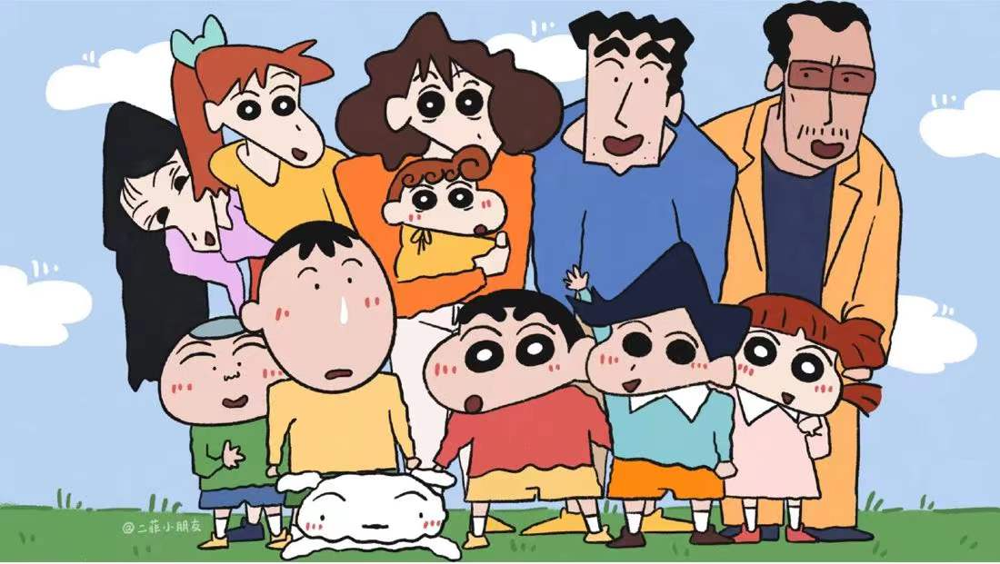
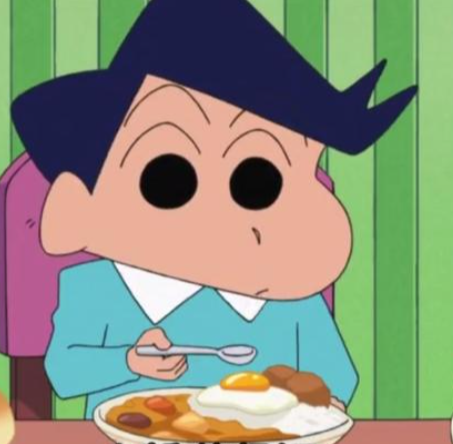
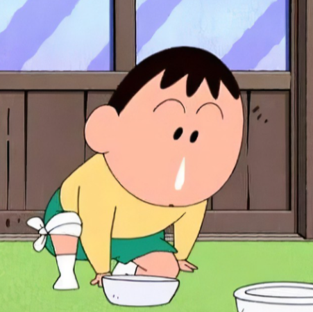

老师同学


风间彻
向日葵班学生。家境优越，喜欢显得自己成熟，有点装腔作势，自尊心很强，。幼儿园外上各种各样的补习班。新之助和他经常碰到，他们两个总是吵架，但很快就会和好，是很好的朋友。
樱田妮妮
向日葵班学生。喜欢当淑女，却总是很凶。喜欢玩超现实扮家家酒，朋友们都不愿意陪她玩，却不敢说什么。跟妈妈一样，不如意时常常在厕所或没有人的角落里拿兔子拳打脚踢来出气。
佐藤正男
正直、为他人着想、有一颗柔软善良的心、很关心喜欢的人或朋友，谦虚、有上进心、画画出色.胆小、爱哭，总被残暴化后的妮妮欺负却又不会反击。平时很软弱，但做成了某件事就会变得信心十足。

阿呆
大家不能被他呆呆的外表所迷惑，他沉默寡言，但在重要时刻总能做出与自己年龄不符的行为，从而转变战局，他是最靠谱的，也是相对比较正常的。阿呆为人老实，不善言谈，从不发表自己的意见，运动神经迟钝，总是陪小新玩无聊的游戏。
小爱（酢乙女爱）
小爱是小新他们的朋友，双叶幼稚园的学生，她是大财阀的女儿，为了了解体验庶民的生活用飞镖的方式选择到了春日部，所以她来到了双叶幼稚园。 小爱被小新的一句“我对小孩子没有兴趣”的特点所吸引，称他为:小新少爷、小新大人，小新（称为小新少爷次数比较多），总和妮妮不对付。
吉永老师
向日葵组的班主任。每天健康地照顾孩子们，玩的时候比孩子们更开心。心地善良，是一个非常负责任并且有耐心的好老师。隔壁玫瑰班老师松坂梅总是向她抬杠叫板，偏要和她拼个高下。